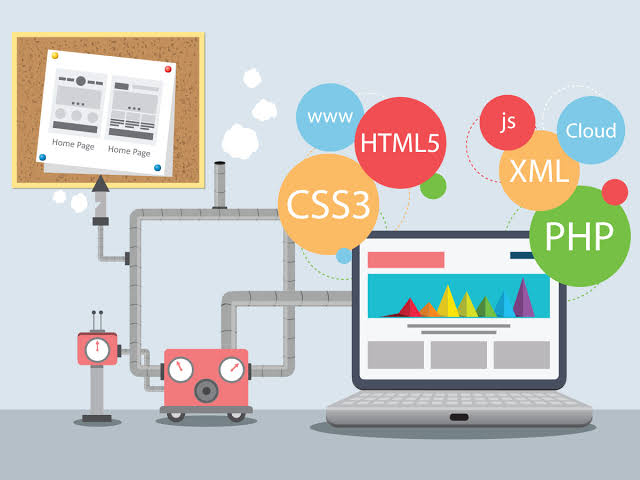

Métodos e Técnicas de Estudo
Tópicos já Estudados
Tópicosa a serem Estudados
Guia de Estudos - Nova Tecnonlogia Informatica
Métodos e Técnicas de Estudo
Técnica Pomodóro: estude com foco total por 25 minutos e descanse por 5 minutos.
Revisões espaçadas: revise o conteúdo após 24 horas, 7 dias e 30 dias para fixar a matéria na memória.
Ambiente adequado: mantenha um local limpo, iluminado e livre de distrações
Tópicos já Estudados:
Fifuras de Linguagem
Parnasianismo
Realismo
Tópicos a serem Estudados:
Romantismo
Interpretação de texto

Imagem Ilustrativa sobre Desenvolvimento Web.